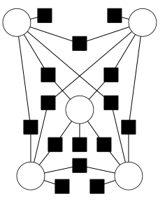
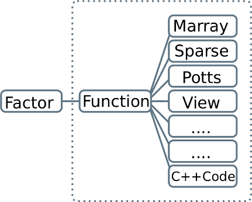

OpenGM
OpenGM is a C++ template library for discrete factor graph models and distributive operations on these models. It includes state-of-the-art optimization and inference algorithms beyond message passing. OpenGM handles large models efficiently, since (i) functions that occur repeatedly need to be stored only once and (ii) when functions require different parametric or non-parametric encodings, multiple encodings can be used alongside each other, in the same model, using included and custom C++ code. No restrictions are imposed on the factor graph or the operations of the model. OpenGM is modular and extendible. Elementary data types can be chosen to maximize efficiency. The graphical model data structure, inference algorithms and different encodings of functions inter-operate through well-defined interfaces. The binary OpenGM file format is based on the HDF5 standard and incorporates user extensions automatically.
Features
Factor Graph Models:

Our implementation can deal with factor graphs [55] of any order and structure, from second order grid graphs to irregular higher-order models. We support arbitrary (commutative and associative) operations, including sum, product, conjunction and disjunction, flexible number of labels (different variables can have differently many labels), and function sharing across factors. The example graph on the right illustrate a second factor graph with 5 variable nodes, a single unary factor connected to each variable node and 10 second order factors. The corresponding objective function factorize according to this structure and the operation addition intoFunctions:

Our function type abstraction enables different (built-in and custom) encodings to be used alongside each other. Naitively OpenGM provides: Explicit function (multi-dimensional table), sparse function (sparse multi-dimensional table), Potts functions (different types, including higher-order), truncated absolute difference, truncated squared difference, and views that treat one graphical model as a function within another graphical model. Furthermore, functions can be easyly included into OpenGM with full support and efficient storage. As illustrated in the right, each factor is associated to a function out of a predefined list of different function types.Algorithms: OpenGM comes with an uniform inference algorithm framework, which makes developing of new algorithms quite easy and allready provides several state of the art methods or wrappers to existing code:
- Combinatorial/Gobal Optimal Methods
- Integer Linear Programming (ILP)*** [43]
- Multicut*** [45,40]
- Multiway Cut*** [45,40]
- Asymetric Multiway Cut*** [3]
- A-star branch-and-bound search (AStar) [25]
- Reduced Inference [41]
- BruteForce
- CombiLP [17]
- DAOOPT [15]
- AD3 with Branch and Bound [16]
- Linear Programming Relaxations
- Dual Decomposition with Bundle [44]
- Dual Decomposition with Subgradients [44]
- Sequntial Tree-reweighted Message Passing (TRWS)** [51]
- Adaptive Diminishing Smoothing ALgorithm (ADSAL) [61]
- Quadratic Pseudo Boolean Optimization (QPBO)* [60]
- Higher order QPBO [34]
- MQPBO** [50,63]
- Multiway Cut Relaxations*** [45,40]
- Linear Programming Relaxations over the Local Polytope (LP)*** [43]
- AD3 [16]
- MPLP [14,13,12]
- GraphCut
- Message Passing Methods
- Dynamic Programming on acyclic graphs (also for higher-order) [24]
- Loopy Belief Propagation (LBP)** (different variant, also for higher-order) [64,24]
- Sequential Belief Propagation (BPS)** (different variant, also for higher-order) [64,51,24]
- Tree-reweighted Belief Propagation (TRBP) (also for higher order) [66]
- Move Making Methods
- Lazy Flipper [22]
- Inf and Flip [22]
- Iterated Conditional Modes (ICM) [26]
- FastPD* [53]
- Alpha-Expansion** [30]
- Alpha-Beta-Swap** [30]
- Alpha-Fusion [4]
- Kerninghan Lin Algorithm [47]
- LOC [39]
- Self-Fusion [4]
- Proposal-Based-Fusion [4]
- Local Submodular Approximation with Trust Region [6]
- Sampling
- Gibbs Sampling (beta) [36]
- Swendsen-Wang (beta) [62]
- Wrapped External Code for Discrete Graphical Models
* only available by wrapped external code
** available by native OpenGM-code and wrapped external code
*** requires CPLEX (free for academical use)
Binary HDF5 File Format: Support I/O for factor graph models into files. The I/O framework is such designed that it easily can be extended by new function types.
Interfaces: Command Line Optimizer with built-in protocol mode for runtime and convergence analyses. Matlab and Python interfaces will be available with version 2.1